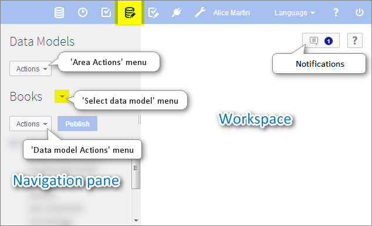

Introduction to data models
Section contents
Overview
What is a data model?
The first step towards managing data in EBX5 is to develop a data model. The purpose of a data model is to provide the detailed structural definition of the data that will be managed in the repository, in terms of organization, data types, and semantic relationships.
In order to implement a data model in the repository, you will first create a new data model, then define the details of the structure of its component table, field, and group elements, as well as their behavior and properties. When you have completed the entry or import of your data model structure in the repository, you will publish it to make it available for use by data sets. Once you have a publication of your data model, you and other users can create data sets based upon it to hold the data that is managed by the EBX5 repository.
Basic concepts used in data modeling
A basic understanding of the following terms is necessary to proceed with the creation of data models:
Using the Data Models area user interface
Navigating within the Data Model Assistant
Data models can be created, edited or imported, and published in the Data Models area of the user interface. The EBX5 data model assistant (DMA) facilitates the development of data models.
Note
This area is available only to authorized users in the 'Advanced perspective'.

The navigation pane is organized into the following sections:
Configuration | The technical configuration of the data model. |
Data model properties | The technical properties of the model. |
Included data models | Defines the data models included in the current model. The data types defined in included data models can be reused in the current model. |
Component library | Defines the Java components available in the model. These provide programmatic features that can be used in the model, such as programmatic constraints, functions, and UI beans. |
Services | The services available for use in the data model. |
Ajax components | The Ajax components available for use in the data model. |
Java bindings | The properties of the Java types to be generated from the data model. |
Replications | The replication units available for this data model. |
Data structure | The structure of the data model. Defines the relationship between the elements of the data model and provides access to the definition of each element. |
Simple data types | Simple reusable types defined in the current data model. |
Complex data types | Complex reusable types defined in the current data model. |
Included simple data types | Simple reusable types defined in an included external data model. |
Included complex data types | Complex reusable types defined in an included external data model. |
Data model element icons


Related concepts
 User guide table of contents
User guide table of contents